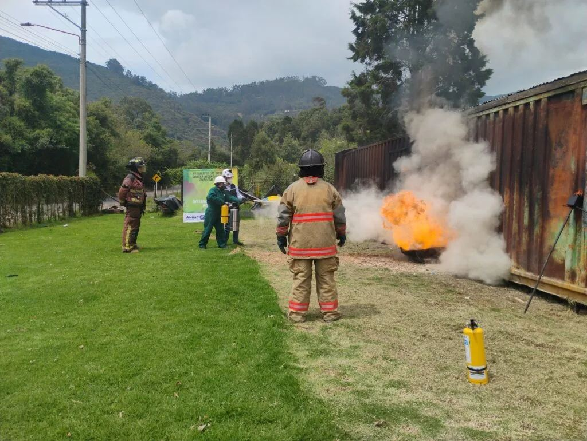

Drummond reúne a más de 100 brigadistas en un entrenamiento intensivo para fortalecer la seguridad minera
Drummond Ltd. se dedica principalmente a la minería de carbón térmico en Colombia, siendo uno de los mayores productores y exportadores del país y un referente mundial en este sector. Sus operaciones se concentran en el Cesar (minas La Loma y El Descanso) y en el puerto de Santa Marta, desde donde exporta millones de toneladas de carbón cada año.
Con el objetivo de consolidar su cultura de prevención y respuesta ante emergencias, Drummond Ltd. llevó a cabo el segundo encuentro de brigadas de emergencia en sus operaciones mineras, con la participación de más de 100 empleados y contratistas.
Durante la jornada, los brigadistas rotaron por 10 estaciones de entrenamiento práctico, diseñadas para simular situaciones críticas:
- Combate incendios con mangueras, chorros y trajes especializados.
- Extricación vehicular y técnicas de rescate en accidentes.
- Atención médica: evaluación de signos vitales, RCP y control de hemorragias.
- Rescate en altura y en espacios confinados.
- Manejo de materiales peligrosos.
- Sistema de Comando de Incidentes y traslado de lesionados.
El evento fue coordinado por la ARL Seguros Bolívar, con el apoyo de empresas aliadas como Komatsu, Varichem, Extinseg, Proairex, Relianz y CHM Minería, entre otras.
“En este segundo encuentro de brigadas aprovechamos al máximo el conocimiento, los espacios y los recursos con los que cuenta Drummond, para que los brigadistas de la compañía y de las empresas contratistas pudieran interactuar a través de ejercicios prácticos en diez estaciones, donde se generó un valioso intercambio de conocimientos y experiencias”— Nelson Díaz Mora, supervisor sénior de seguridad industrial de Drummond Ltd.
“Este encuentro me sirvió para fortalecer mis habilidades y mi formación como brigadista en la compañía”— Martín Montero Pitre, operador de buldócer de Drummond Ltd.
«Este tipo de encuentros de brigadistas son supremamente importantes para compartir conocimientos de cada una de las áreas y sus procesos»— Talía María Barroso Hernández, supervisora de operaciones de Varichem de Colombia